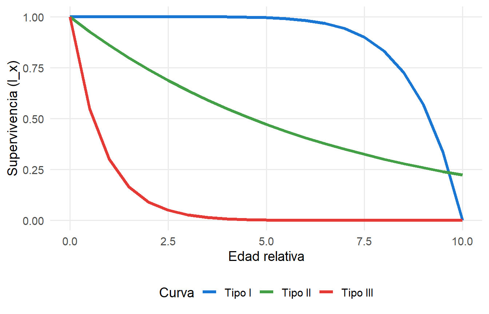

Demografía: construyendo una tabla de vida paso a paso
1. Una pregunta
En la hoya de Loja, un equipo de investigación ha estado monitoreando una población de Cedrela montana durante varios años. Han encontrado que:
- En un año determinado, 1.000 semillas germinan y producen plántulas.
- Al año siguiente, solo 500 plántulas sobreviven.
- Al segundo año, sobreviven 250 juveniles.
- Al tercer año, sobreviven 125 juveniles.
- Al cuarto año, sobreviven 50 adultos.
- Al quinto año, sobreviven 10 adultos.
Pregunta: ¿qué le pasa a esta población? ¿Crece, decrece o se mantiene estable? ¿Cómo podemos saberlo?
Para responder, necesitamos construir una tabla de vida. En esta lectura lo haremos paso a paso, usando estos datos como ejemplo.
2. ¿Qué es la demografía?
La demografía es el estudio de los cambios en el tamaño y la estructura de las poblaciones a lo largo del tiempo. Se centra en dos procesos:
- Mortalidad: cuántos individuos mueren y a qué edad.
- Fecundidad: cuántos descendientes produce cada individuo y a qué edad.
Estos procesos determinan si una población crece, decrece o se mantiene estable.
NoteConexión con la lectura 1.2
En la lectura anterior vimos que el fitness se descompone en supervivencia y fecundidad. La demografía es la herramienta que nos permite cuantificar esos componentes y proyectar su efecto sobre la población.
3. Construyendo la tabla de vida (paso 1): los datos de supervivencia
Una tabla de vida resume la supervivencia y la fecundidad de una población a lo largo del tiempo. Empecemos con los datos de supervivencia que tenemos:
| Edad (años) | Individuos que sobreviven (\(n_x\)) |
|---|---|
| 0 | 1.000 |
| 1 | 500 |
| 2 | 250 |
| 3 | 125 |
| 4 | 50 |
| 5 | 10 |
Esta es la columna \(n_x\): el número de individuos que sobreviven al inicio de cada edad.
TipPaso 1 para el estudiante
Antes de seguir, responde: ¿cuántos individuos mueren entre la edad 0 y la edad 1? ¿Y entre la edad 1 y la 2? Anota tus respuestas; las usaremos en el siguiente paso.
4. Construyendo la tabla de vida (paso 2): la proporción de supervivencia
Para comparar poblaciones de distintos tamaños, necesitamos una medida relativa. La proporción de supervivencia (\(l_x\)) se calcula dividiendo el número de individuos que sobreviven a la edad \(x\) entre el número inicial:
\[l_x = \frac{n_x}{n_0}\]
En nuestro caso, \(n_0 = 1.000\). Entonces:
| Edad (años) | \(n_x\) | \(l_x\) |
|---|---|---|
| 0 | 1.000 | 1,00 |
| 1 | 500 | 0,50 |
| 2 | 250 | 0,25 |
| 3 | 125 | 0,125 |
| 4 | 50 | 0,05 |
| 5 | 10 | 0,01 |
Interpretación: \(l_x\) es la probabilidad de que un individuo nacido en la cohorte sobreviva hasta la edad \(x\). Por ejemplo, \(l_2 = 0,25\) significa que solo el 25% de las semillas germinadas llegan a los 2 años.
TipPaso 2 para el estudiante
Verifica el cálculo de \(l_3\): si \(n_3 = 125\) y \(n_0 = 1.000\), ¿cuánto es \(l_3\)? ¿Coincide con el valor de la tabla?
5. Construyendo la tabla de vida (paso 3): la mortalidad
Ahora calculemos cuántos individuos mueren entre una edad y la siguiente. La mortalidad (\(d_x\)) se calcula como:
\[d_x = n_x - n_{x+1}\]
Y la tasa de mortalidad (\(q_x\)) es la proporción de individuos que mueren entre la edad \(x\) y \(x+1\):
\[q_x = \frac{d_x}{n_x}\]
Completemos la tabla:
| Edad (años) | \(n_x\) | \(l_x\) | \(d_x\) | \(q_x\) |
|---|---|---|---|---|
| 0 | 1.000 | 1,00 | 500 | 0,50 |
| 1 | 500 | 0,50 | 250 | 0,50 |
| 2 | 250 | 0,25 | 125 | 0,50 |
| 3 | 125 | 0,125 | 75 | 0,60 |
| 4 | 50 | 0,05 | 40 | 0,80 |
| 5 | 10 | 0,01 | — | — |
Interpretación: la tasa de mortalidad es del 50% en los primeros años, pero aumenta a medida que los individuos envejecen (60% a los 3 años, 80% a los 4). Esto sugiere que la mortalidad no es constante con la edad.
TipPaso 3 para el estudiante
Calcula \(d_2\) y \(q_2\) con los datos de la tabla. ¿Coinciden con los valores mostrados?
6. Construyendo la tabla de vida (paso 4): la fecundidad
Hasta ahora solo hemos hablado de supervivencia. Pero para entender si una población crece o decrece, necesitamos saber cuántos descendientes produce cada individuo. La fecundidad (\(m_x\)) es el número promedio de descendientes que produce un individuo de edad \(x\).
Supongamos que en nuestra población de Cedrela montana:
- Los individuos de 0 a 1 años no se reproducen (\(m_0 = m_1 = 0\)).
- Los de 2 años producen 5 semillas viables por individuo (\(m_2 = 5\)).
- Los de 3 años producen 20 (\(m_3 = 20\)).
- Los de 4 años producen 30 (\(m_4 = 30\)).
- Los de 5 años producen 40 (\(m_5 = 40\)).
Añadamos esta columna a la tabla:
| Edad (años) | \(n_x\) | \(l_x\) | \(d_x\) | \(q_x\) | \(m_x\) |
|---|---|---|---|---|---|
| 0 | 1.000 | 1,00 | 500 | 0,50 | 0 |
| 1 | 500 | 0,50 | 250 | 0,50 | 0 |
| 2 | 250 | 0,25 | 125 | 0,50 | 5 |
| 3 | 125 | 0,125 | 75 | 0,60 | 20 |
| 4 | 50 | 0,05 | 40 | 0,80 | 30 |
| 5 | 10 | 0,01 | — | — | 40 |
TipPaso 4 para el estudiante
¿Por qué los individuos de 0 y 1 año tienen \(m_x = 0\)? ¿Qué implicaciones tiene esto para el crecimiento de la población?
7. Calculando \(R_0\): ¿cuántos descendientes deja una hembra en toda su vida?
Ahora que tenemos \(l_x\) y \(m_x\), podemos calcular la tasa reproductiva neta (\(R_0\)):
\[R_0 = \sum l_x \cdot m_x\]
Esta suma nos dice cuántos descendientes produce, en promedio, una hembra a lo largo de toda su vida, ajustado por la probabilidad de sobrevivir hasta cada edad.
Calculemos \(l_x \cdot m_x\) para cada edad:
| Edad (años) | \(l_x\) | \(m_x\) | \(l_x \cdot m_x\) |
|---|---|---|---|
| 0 | 1,00 | 0 | 0,00 |
| 1 | 0,50 | 0 | 0,00 |
| 2 | 0,25 | 5 | 1,25 |
| 3 | 0,125 | 20 | 2,50 |
| 4 | 0,05 | 30 | 1,50 |
| 5 | 0,01 | 40 | 0,40 |
| Total | \(R_0 = 5,65\) |
Interpretación: \(R_0 = 5,65\) significa que cada hembra produce, en promedio, 5,65 descendientes que sobreviven hasta la reproducción. Como \(R_0 > 1\), la población crece.
TipPaso 5 para el estudiante
Si la fecundidad de los individuos de 2 años se redujera de 5 a 2, ¿cómo cambiaría \(R_0\)? Calcula el nuevo valor.
8. Calculando \(T\): ¿a qué edad produce sus descendientes una hembra?
El tiempo generacional (\(T\)) es la edad promedio a la que una hembra produce sus descendientes. Se calcula como:
\[T = \frac{\sum x \cdot l_x \cdot m_x}{R_0}\]
Calculemos \(x \cdot l_x \cdot m_x\) para cada edad:
| Edad (años) | \(x\) | \(l_x \cdot m_x\) | \(x \cdot l_x \cdot m_x\) |
|---|---|---|---|
| 0 | 0 | 0,00 | 0,00 |
| 1 | 1 | 0,00 | 0,00 |
| 2 | 2 | 1,25 | 2,50 |
| 3 | 3 | 2,50 | 7,50 |
| 4 | 4 | 1,50 | 6,00 |
| 5 | 5 | 0,40 | 2,00 |
| Total | \(T = \frac{18,00}{5,65} = 3,18\) años |
Interpretación: el tiempo generacional es de poco más de 3 años. Esto significa que, en promedio, una hembra produce sus descendientes a los 3,18 años de edad.
TipPaso 6 para el estudiante
¿Qué pasaría con \(T\) si la fecundidad de los individuos de 4 y 5 años aumentara? ¿Aumentaría o disminuiría el tiempo generacional? ¿Por qué?
9. Calculando \(r\): ¿a qué tasa crece la población?
La tasa intrínseca de crecimiento (\(r\)) es la tasa de crecimiento per cápita cuando la población crece sin limitaciones. Se puede aproximar como:
\[r \approx \frac{\ln(R_0)}{T}\]
En nuestro caso:
\[r \approx \frac{\ln(5,65)}{3,18} \approx \frac{1,73}{3,18} \approx 0,54 \text{ por año}\]
Interpretación: la población crece a una tasa del 54% anual. Si esta tasa se mantuviera constante, la población se duplicaría en aproximadamente \(\ln(2) / 0,54 \approx 1,3\) años.
TipPaso 7 para el estudiante
Si \(R_0 = 1\), ¿cuánto valdría \(r\)? ¿Qué significa eso para la población?
10. Curvas de supervivencia
Las curvas de supervivencia representan gráficamente \(l_x\) contra la edad \(x\). Hay tres tipos básicos:
10.1 Tipo I: alta supervivencia juvenil
La mayoría de los individuos sobrevive hasta la edad adulta y muere en edades avanzadas. Es típica de especies con poca descendencia y mucho cuidado parental.
Ejemplo local: Tremarctos ornatus. Pocas crías, pero alta inversión parental.
10.2 Tipo II: mortalidad constante
La probabilidad de morir es aproximadamente la misma a cualquier edad. Es típica de especies con mortalidad independiente de la edad.
Ejemplo local: algunas aves del bosque seco de Catamayo, donde la depredación afecta por igual a jóvenes y adultos.
10.3 Tipo III: alta mortalidad juvenil
La mayoría de los individuos muere en las primeras etapas de vida, y solo unos pocos llegan a la edad adulta. Es típica de especies con mucha descendencia y poco cuidado parental.
Ejemplo local: Cedrela montana. Miles de semillas, pero solo unas pocas germinan y llegan a la adultez.
TipPaso 8 para el estudiante
Con los datos de la tabla de vida que construimos, dibuja (o describe) la curva de supervivencia de Cedrela montana. ¿A qué tipo de curva se parece? ¿Por qué?
11. Tipos de tablas de vida
Hay dos formas de construir una tabla de vida:
11.1 Tabla de vida de cohorte
Se sigue a un grupo de individuos nacidos en el mismo período (una cohorte) desde el nacimiento hasta la muerte del último individuo.
Ventajas: refleja la experiencia real de una generación. Desventajas: requiere mucho tiempo (hay que esperar a que muera el último individuo).
Ejemplo local: seguir a una cohorte de plántulas de Cedrela montana en la hoya de Loja desde su germinación hasta que mueran o lleguen a la edad adulta. Implica años de monitoreo.
11.2 Tabla de vida de tiempo específico
Se registra la mortalidad y la fecundidad de individuos de distintas edades en un solo momento. A partir de esos datos se construye una tabla que representa lo que le ocurriría a una cohorte hipotética.
Ventajas: se puede construir en un solo muestreo; aplicable a organismos de vida larga. Desventajas: asume que las tasas son constantes en el tiempo.
Ejemplo local: en un solo muestreo, registrar la edad de todos los individuos de Tremarctos ornatus en el Podocarpus y estimar la mortalidad por clase de edad.
TipPaso 9 para el estudiante
La tabla de vida que construimos con Cedrela montana, ¿es de cohorte o de tiempo específico? Justifica tu respuesta.
12. Síntesis y puente
En esta lectura construimos una tabla de vida paso a paso:
- Registramos la supervivencia (\(n_x\)) de una cohorte.
- Calculamos la proporción de supervivencia (\(l_x\)).
- Calculamos la mortalidad (\(d_x\)) y la tasa de mortalidad (\(q_x\)).
- Añadimos la fecundidad (\(m_x\)).
- Calculamos \(R_0\) (tasa reproductiva neta).
- Calculamos \(T\) (tiempo generacional).
- Calculamos \(r\) (tasa intrínseca de crecimiento).
Con estos valores podemos responder la pregunta inicial: ¿esta población crece o decrece? La respuesta es que crece, porque \(R_0 > 1\) y \(r > 0\).
En la próxima clase veremos cómo estos parámetros se usan para modelar el crecimiento poblacional, y cómo las poblaciones crecen (o decrecen) en función de sus tasas demográficas.
Pregunta final: ¿qué especie de Loja te gustaría estudiar con una tabla de vida? ¿Qué información necesitarías para construirla?
13. Para profundizar
- Gotelli, N. J. (2008). A Primer of Ecology. 4th ed. Sinauer. Capítulo 2.
- Begon, M., Harper, J. L., & Townsend, C. R. (2006). Ecology: From Individuals to Ecosystems. Blackwell. Capítulo 6.
- Krebs, C. J. (1999). Ecological Methodology. 2nd ed. Benjamin Cummings. Capítulo 9.
14. Preguntas de comprensión
- ¿Cuál es la diferencia entre una tabla de vida de cohorte y una de tiempo específico? ¿Cuándo usarías cada una?
- ¿Qué representa \(l_x\) y cómo se calcula a partir de \(n_x\)?
- Describe las tres curvas de supervivencia (I, II, III) y da un ejemplo local para cada una.
- ¿Qué significa que \(R_0 > 1\)? ¿Y que \(R_0 < 1\)?
- ¿Qué es el tiempo generacional (\(T\)) y por qué es importante para calcular \(r\)?
- Si una población tiene \(R_0 = 0,8\) y \(T = 5\) años, ¿crece o decrece? ¿Por qué?
- ¿Qué limitaciones tiene el uso de tablas de vida de tiempo específico para especies de vida larga?
- Con los datos de la tabla de vida de Cedrela montana, ¿qué pasaría con \(R_0\) si la mortalidad juvenil aumentara? Justifica tu respuesta.